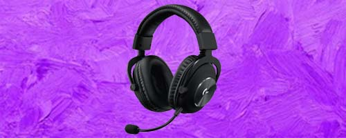
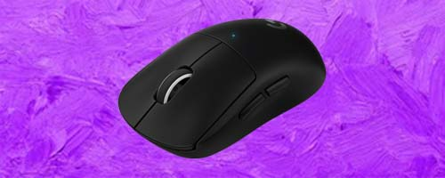
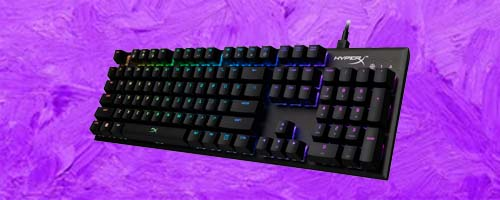
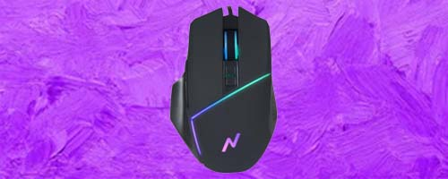

Auriculares Logitech G Pro X
Reseña
Los auriculares Logitech G Pro X son una opción destacada para los jugadores que buscan un audio de alta calidad y comodidad duradera. Con su sonido envolvente DTS Headphone:X 2.0, estos auriculares brindan una experiencia inmersiva en juegos. Las almohadillas de espuma viscoelástica y la diadema ajustable garantizan una comodidad óptima durante largas sesiones de juego. Además, su construcción duradera y diseño elegante los convierten en una elección atractiva. Con los auriculares Logitech G Pro X, disfrutarás de un sonido impresionante y un rendimiento excepcional para una experiencia de juego inigualable.
Puntaje: 10/10
Mouse Logitech G Pro X Superlight
Reseña
El Logitech G Pro X Superlight es un ratón inalámbrico ultraligero diseñado para jugadores profesionales. Con un peso de solo 63 gramos, ofrece una experiencia ágil y precisa. Equipado con el sensor HERO 25K, garantiza una precisión excepcional hasta 25,600 DPI. Su diseño ambidiestro se adapta a diferentes estilos de agarre, y su conectividad inalámbrica LIGHTSPEED proporciona una conexión rápida y estable. Con una batería de larga duración y la posibilidad de personalizar las configuraciones a través del software G HUB, el G Pro X Superlight ofrece una experiencia de juego impecable.
Puntaje: 8/10
Teclado Hyper X Alloy FPs
Reseña
El teclado HyperX Alloy FPS es una opción destacada para los jugadores que buscan rendimiento y durabilidad. Con su diseño compacto y robusto, este teclado ofrece una experiencia de juego excepcional. Equipado con interruptores mecánicos Cherry MX, proporciona una respuesta táctil y precisa. Sus teclas retroiluminadas con efectos de iluminación personalizables permiten una experiencia visual atractiva. Además, cuenta con una estructura de acero resistente que garantiza la durabilidad a largo plazo. Con el HyperX Alloy FPS, disfrutarás de un teclado confiable y de alta calidad para alcanzar el máximo rendimiento en tus sesiones de juego.
Puntaje: 4/10
Microfono Yeti Nano
Reseña
El micrófono Yeti Nano es una excelente opción para aquellos que buscan una calidad de audio excepcional en un diseño compacto. Con su cápsula de condensador de calidad profesional, captura grabaciones nítidas y claras. Ofrece múltiples patrones de captura, lo que permite adaptarse a diferentes situaciones de grabación. Su conexión USB lo hace fácilmente compatible con computadoras y dispositivos móviles. Además, cuenta con controles intuitivos de volumen y silencio. Con el Yeti Nano, podrás grabar voces e instrumentos con una calidad profesional sin ocupar mucho espacio en tu escritorio.
Puntaje: 9/10
Mouse Noganet NGM-22
Reseña
El mouse Noganet NGM-22 es una opción básica para aquellos que buscan una solución sencilla y económica. Con su diseño simple y ergonómico, ofrece un uso cómodo y fluido. Cuenta con una resolución ajustable y un rendimiento aceptable para tareas diarias y navegación web. Sin embargo, es importante tener en cuenta que este mouse no ofrece características avanzadas o funciones especiales. Su durabilidad y precisión pueden no ser tan altas como las de otros modelos de gama superior. En general, el Noganet NGM-22 es una opción adecuada para aquellos con necesidades básicas y un presupuesto limitado.
Puntaje: 2/10
Auriculares HyperX Cloud Flight

Reseña
Los auriculares HyperX Cloud Flight son una elección destacada para aquellos que buscan una experiencia inalámbrica de audio de alta calidad. Con su conexión inalámbrica de 2.4 GHz, estos auriculares ofrecen libertad de movimiento y una calidad de sonido excepcional. Su duración de batería de hasta 30 horas garantiza largas sesiones de juego sin interrupciones. Además, su comodidad es notable gracias a las almohadillas de espuma viscoelástica y la diadema ajustable. Los controles integrados permiten un acceso fácil al volumen y a la función de silencio. En resumen, brindan una experiencia inalámbrica de audio confortable.